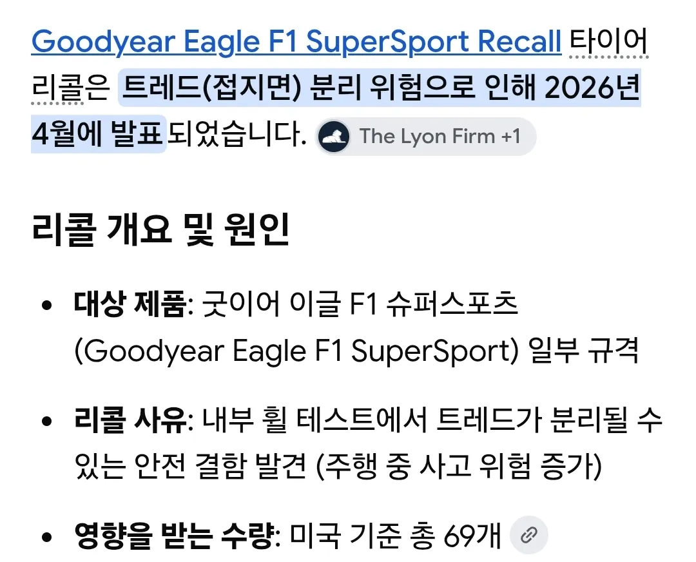

운전자 상태가 궁금해서 인터넷 찾아봄.
1. 아우토반 초고속 주행 중 사고
• 상황: 속도 제한이 없는 독일 고속도로 아우토반에서 테슬라 차량이 시속 285km(280km/h 오버)로 달리고
있었습니다. • 원인: 고속 주행 중 갑작스럽게 타이어가 터지면서(펑크) 중심을 잃고 사고로 이어졌습니다. 2. 차량 완파 및 차주 생존 (사망 아님) • 결과: 엄청난 속도로 인해 차량이 형체를 알아보기 힘들 정도로 분해되듯 찢어지고 완파되었습니다. • 생존: 통상 이 정도 속도의 사고는 사망으로 이어지나, 다행히 주변 차량의 피해가 없었고 운전자(차주)도
목숨을 건졌습니다.
배터리 화재로 이어지지 않고 차체가 충격을 흡수하면서 생존한 '천운'의 사례로 국내외 커뮤니티에서
테슬라의 안전성(차체 강성)과 관련해 큰 화제가 되었습니다.
살았음.
타이어 결함 사고인데 뭔 소리야 글 안 읽음?